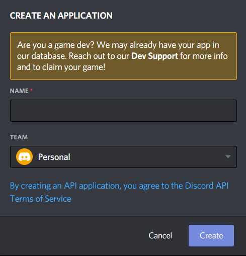
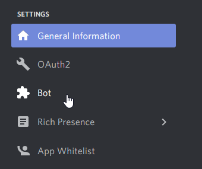
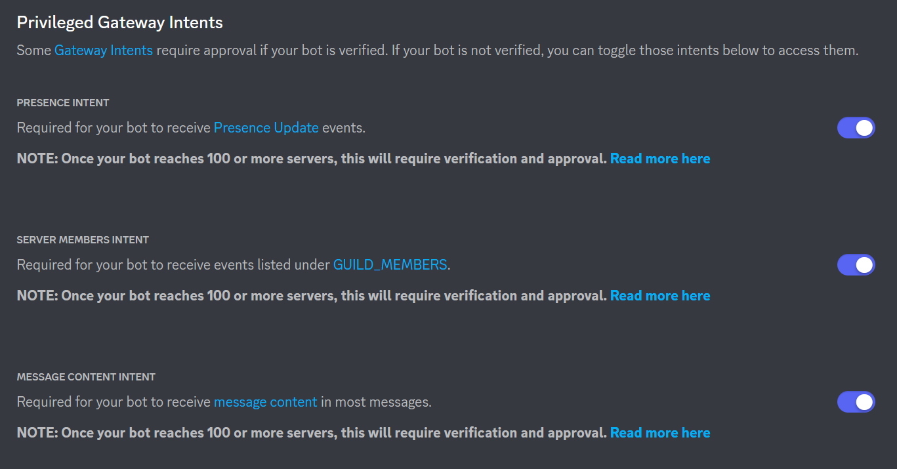

Creating a bot account
To use Red you will require a bot account and to enable privileged intents. Both these steps will be covered below.
Creating the bot application
In order to use Red, we must first create a Discord Bot account.
Creating a Bot account is a pretty straightforward process.
Make sure you’re logged on to the Discord website.
Navigate to the application page
Click on the “New Application” button.
Give the application a name and click “Create”.
Create a Bot User by navigating to the “Bot” tab and clicking “Add Bot”.
Click “Yes, do it!” to continue.
If you want others to be able to invite your bot tick the Public Bot. Keeping it unticked will prevent others from inviting your bot to their servers and only you will be able to add the bot to servers (provided that you have needed permissions in the server you want to add the bot to).
Make sure Require OAuth2 Code Grant is unchecked.
Copy the token using the “Copy” button.
This is not the Client Secret at the General Information page
Warning
Do not share your token as it is like your password. If you shared your token you can regenerate it.
Continue to the next section to enable privileged intents.
Enabling Privileged Intents
Warning
Red Bot requires all intents. This section is required.
Make sure you’re logged on to the Discord website.
Navigate to the application page
Click on the bot you want to enable privileged intents for.
Navigate to the bot tab on the left side of the screen.
Scroll down to the “Privileged Gateway Intents” section, enable all three privileged intents and save your changes.

Warning
Red bots with over 100 servers require bot verification which is not covered in this guide. Remember that we do not support public bots. We encourage you to read that page before scaling up your bot.
Parts of this guide have been adapted from discord.py intro and discord.py privileged intents.